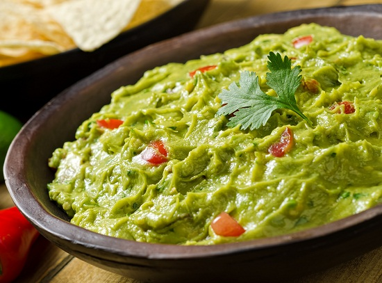

Guacamole

Guacamole is an avocado-based dip, spread, or salad first developed in Mexico.
In addition to its use in modern Mexican cuisine, it has become part of international cuisine as a dip, condiment and
salad ingredient.
Ingredients:
- 3 Avocados - peeled, pitted, and mashed
- 1 Lime, juiced
- 1 Teaspoon salt
- 2 Roma (plum) tomatoes, diced
- 1/2 Cup diced onion
- 3 Tablespoons chopped fresh cilantro
- 1 Teaspoon minced garlic
- 1 Pinch ground cayenne pepper (Optional)
Steps
- Mash avocados, lime juice, and salt together in a medium bowl.
- Mix in tomatoes, onion, cilantro, and garlic.
- Stir in cayenne pepper.
- Serve immediately, or cover and refrigerate for 1 hour for improved flavor.
Credits: AllRecipes
Home